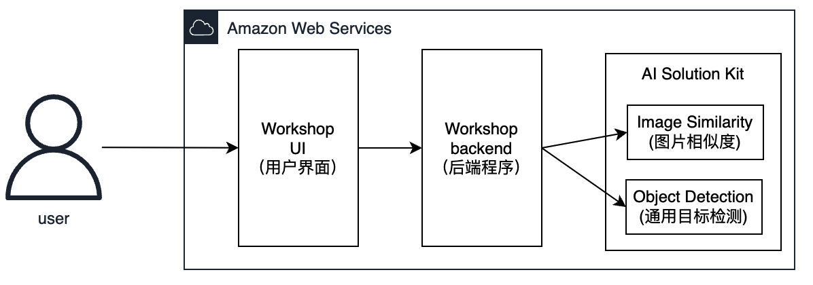
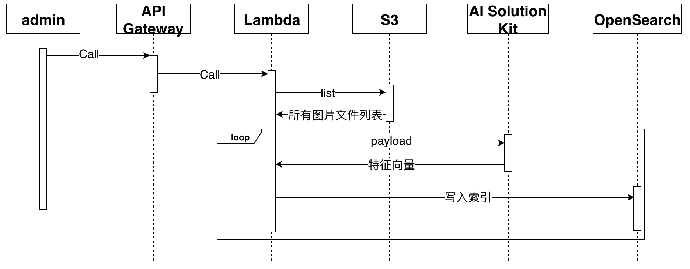
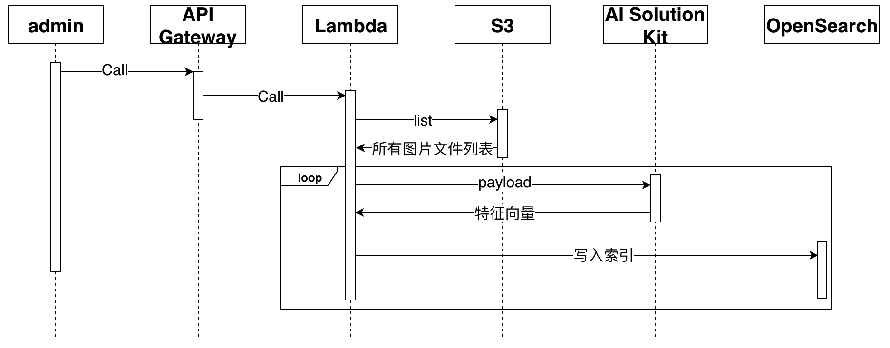

Architecture
本次动手实验中，架构分为3个部分：
- AI Solution Kit - 通用物体识别、图片相似度功能。提供核心AI 能力。
- Workshop 前端程序(Workshop UI)
- Workshop 后端程序(Workshop backend) 
AI Solution Kit架构
本方案利用了AI Solution Kit解决方案中的通用物体识别 (Object Detection)、图片相似度（Image Similarity）。
方案中提供了两种架构，基于Amazon Lambda的架构和基于Amazon SageMaker的架构。本动手实验是基于Lambda架构。对推理时效性要求较高的，在生产中可使用基于SageMaker版本。
具体架构请点击：https://awslabs.github.io/aws-ai-solution-kit/zh/architecture/
Workshop架构
以图搜图原理
 以图搜图需要先建立图片库（索引）。
以图搜图需要先建立图片库（索引）。
根据提供的图片，通过预训练模型，提取出特征向量，然后对待搜索图片也同样提取特征向量，再进行k最近邻（KNN）搜索，即可搜索到相似的图片。
预训练模型和提取图片特征向量由AI Solution Kit提供，只需要向对应API提交图片信息即可。
Amazon OpenSearch Service提供KNN搜索，能够在相似性用例中增强搜索能力。
我们将AI Solution Kit和Amazon OpenSearch结合使用来实现以图搜图功能。
平台/管理员创建索引
 

- 管理员向API Gateway发送建立图片索引请求
- API Gateway把信息转发给Lambda处理
- Lambda遍历S3上图片
- 把图片发送到AI Solution Kit，获取图片的特征向量。
- 把返回的图片特征向量和图片位置信息作为一条item写入OpenSearch，生产中，可加入业务信息。
用户进行图片搜索


- 用户向API Gateway发送待查询图片信息
- API Gateway把信息转发给Lambda处理
- Lambda把图片发送到AI Solution Kit，获取此图片的向量信息。
- 根据返回的图片向量信息在OpenSearch中进行KNN查找。OpenSearch会返回若干个结果，结果中包含图片位置信息。
- 根据图片位置信息对S3中图片进行预签名